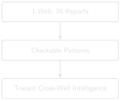
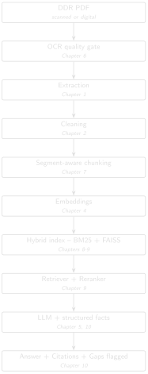

# code/chapter_12/torque_trend_check.py
def torque_trend(readings: list[tuple[str, float]]) -> list[tuple[str, float, float]]:
"""Given [(date, torque_value), ...] in chronological order, return
each day's percentage change from the previous day."""
trend = []
for (prev_date, prev_val), (date, val) in zip(readings, readings[1:]):
pct_change = (val - prev_val) / prev_val if prev_val else 0.0
trend.append((date, val, pct_change))
return trend12 Sequence Detection: Building Toward Cross-Well Intelligence

Progress ████████████░ 12 / 13 · Estimated time: 60–90 min · Difficulty: 🔴 Advanced
12.1 Learning objectives
By the end of this chapter, you will be able to:
- Combine structured numeric trends (torque, ROP) with narrative operation text to build a single, checkable operational story.
- Explain how a windowed leading-indicator detector works — and verify, from real thresholds in production code, exactly what “causal” and “escalating” mean before trusting either label.
- Understand honestly what this book’s single-well archive can and can’t demonstrate, and what it would take to scale this technique to genuine cross-well intelligence.
12.2 Operational Problem
Sarah, the intervention engineer, asks the payoff question every previous chapter has been building toward: “Did something earlier predict trouble later?” A human reading 76 reports in sequence can, with effort, spot a pattern — but a system that has structured, classified, and indexed the same text can hold every report in mind at once, and check numeric trends a human would have to read a table on every single page to notice.
This chapter is deliberately honest about scale: Utah FORGE’s public archive is one well, one continuous drilling programme — not the multi-well, multi-phase campaign this book’s companion pipeline was originally built to analyse. So instead of presenting a large statistical finding, this chapter shows you exactly how to check a real, small pattern by hand, using the same technique — and shows you precisely what production code exists to scale that technique up once you have more than one well’s worth of data.
12.3 A real, checkable pattern
Report #38’s TORQUE header field — a single number recorded every day regardless of what happens — tells a real story across three consecutive days:
NoteReal header data, reports #36-38
Report #36 (2020-11-24): TORQUE: 4,400
Report #37 (2020-11-25): TORQUE: 4,200
Report #38 (2020-11-26): TORQUE: 5,615 (header) / 6,500 (during the slide)
"During the slide lost tool face and became
assembly became stuck"Torque was flat — even slightly down — for two days, then jumped by roughly a third on the same day the assembly became stuck.
TipEngineering Translation: Leading indicator vs. same-day correlation
A leading indicator is a signal that shows up before the trouble — like a rising torque trend days ahead of an actual stuck-pipe event, which would genuinely give you warning. A same-day correlation just means two things moved together on the same day — useful evidence that they’re related, but it confirms trouble, it doesn’t predict it. This chapter’s torque pattern is the second kind, and it matters to be precise about which one you’re actually looking at.
This is a same-day correlation between a structured number and a narrative event, not a multi-day advance warning — and that distinction matters. Don’t claim a leading indicator you haven’t actually verified extends before the event; this pattern says “torque and the stuck-pipe event moved together,” not “torque predicted the stuck pipe two days out.”
Chapter 5’s other real sequence — report #49’s packers failing to set, followed same-day by picking up a fishing BHA, followed by report #50’s actual fishing operation — is a genuine two-report causal chain, directly traceable and already fully verified with real text.
12.4 Theory: how the production tool would check this at scale
The companion pipeline’s src/ddr_rag/causality_analyzer.py — part of DDR_UTAH_FORGE, not this book’s repository — implements exactly this kind of check, generalized: for a given term, it compares frequency in a window before and after a boundary date, and labels a term causal only above a defined post-boundary NPT rate, and escalating only above a defined frequency-increase ratio. The thresholds below are reported directly from that module, not something you can inspect or run with this book’s own bundled code:
TRANSITION_WINDOW_DAYS = 14 # days before/after a boundary to compare
MIN_TERM_FREQ = 3 # minimum occurrences before a term counts at all
NPT_SIGNAL_THRESHOLD = 0.40 # post-boundary NPT rate to call a term "causal"
ESCALATION_FREQ_RATIO = 1.5 # frequency increase to call a term "escalating"
TipEngineering Translation: Threshold constants
These four lines are named, readable numbers you could point to on a whiteboard and defend in a meeting — “we call it escalating once frequency rises by 50%” — rather than a judgment buried invisibly inside a trained model’s weights. Anyone can read them, question them, and change them without touching the logic around them.
Every one of these is a plain, readable number you can inspect, change, and justify — not a weight buried inside a trained model.
ImportantA real limitation worth understanding, not hiding
This module’s default phase configuration — ["MIRU", "COND1", "INTRM1", "INTRM2", "PROD1", "COMPZN"] — comes from operator_alpha, a different (private, North Sea) campaign’s phase vocabulary. Utah FORGE’s real data doesn’t have that phase structure: its ddr_facts.parquet phase field is "Production Drilling" for essentially the entire programme, right up to the Completion-DFIT report. Running causality_analyzer.py against this archive as-is would compare windows around phase boundaries that don’t meaningfully exist in this well’s data — the code would run, but the output wouldn’t mean anything useful yet.
This is a genuinely common situation in real engineering work: code built and validated on one dataset doesn’t automatically transfer to another just because the file paths line up. Before trusting output from an adapted pipeline, check that the assumptions baked into its configuration (here, a phase vocabulary) actually match your data. The src/ddr_rag/npt_classifier.py module, by contrast, has been adapted for Utah FORGE specifically — classify_utah_forge_npt() exists and recognises this archive’s real fields — which tells you adaptation here is partial, not absent: some layers of this pipeline are ready for this well’s data, and some aren’t yet.
12.5 Implementation
12.5.1 Step 1: measure day-over-day change, not just the raw numbers
What problem are we solving?
Turn a list of daily torque readings into a measured day-over-day percentage change, so “roughly a third” becomes an exact, checkable number.
Inputs
readings: a chronological list of(date, torque_value)pairs.
Expected Output
A list of (date, torque_value, percentage_change) — one entry for every day after the first, since a percentage change needs a previous day to compare against.
What just happened?
This walks through the readings one consecutive pair at a time and computes how much each day’s torque changed relative to the day before, as a percentage — the exact arithmetic behind the “flat, then a third higher” story told in prose above.
12.5.2 Step 2: run it against report #38’s real numbers
What problem are we solving?
See the actual percentage change for reports #36–38, printed as real numbers instead of an approximate description.
Inputs
- The three real
TORQUEheader values from reports #36, #37, and #38.
Expected Output
2020-11-25: 4200 (-4.5%)
2020-11-26: 5615 (+33.7%)readings = [
("2020-11-24", 4400),
("2020-11-25", 4200),
("2020-11-26", 5615),
]
for date, val, pct in torque_trend(readings):
print(f"{date}: {val} ({pct:+.1%})")What just happened?
Running the real header values through torque_trend confirms the pattern precisely: a 4.5% dip the day before, then a 33.7% jump on the stuck-pipe day itself — turning “roughly a third” into an exact, reproducible number sourced from the report headers themselves.
12.6 Production Reality
This chapter’s torque check works because Utah FORGE’s header format is completely consistent, and because a single well gives you exactly one example of the pattern. Genuine cross-well intelligence has different demands entirely:
- different rigs and BHA configurations have different normal torque ranges — a 25% jump threshold tuned on this well could be meaningless, or far too sensitive, on a well drilled with different equipment
- not every operator’s DDR software populates a header field as cleanly as WellEz does here — a real multi-operator archive may need per-source parsing before any threshold-based check is even possible
- one well gives you one instance of a pattern, which is a hypothesis, not a finding — genuine cross-well intelligence needs enough wells to tell a real, recurring precursor apart from coincidence, which is exactly why the companion pipeline’s
causality_analyzer.pywas built against a many-well campaign in the first place - as the callout above shows, code built and tuned for one dataset’s phase vocabulary doesn’t just work on a new dataset because the file paths match — every threshold and configuration assumption needs re-checking against the new data before you trust its output
12.7 Practical exercise
🟢 Beginner
Try it yourself: Extend readings with report #39’s header torque value (check the PDF yourself — Chapter 1’s read_ddr.py will get it for you) and confirm whether the elevated torque persisted after the pipe was freed, or dropped back toward the pre-event baseline.
You’ll know it worked when: you can state the real percentage change for each day, sourced from header fields you extracted yourself, not from this chapter’s text.
12.8 Field notes
Warning🔧 Field notes: the pattern doesn’t stop at the stuck-pipe day
Action: read report #39’s narrative text — the day after the stuck-pipe day this chapter’s torque numbers track — the same lines Chapter 3’s Field Notes already flagged as invisible to keyword search.
Result: report #39 says:
- “Work tight hole at 6,526’.”
- “Due to high torque decision to pull out of hole”
- “Hole drag from 6,050’ to 5,901’ no issues”
Continued elevated-torque language, one calendar day after report #38’s header TORQUE value jumped 33.7% on the stuck-pipe day itself.
Why: this chapter’s structured trend check only looks at the TORQUE header field across three days, and stops at report #38. But report #39’s narrative — high torque, a tight hole, a deliberate decision to pull out of hole — reads like the same operational story continuing in prose, one day after the structured number spiked.
Lesson: a single structured signal, however precise, is one thread of a larger story. Report #39 is exactly the kind of continuation a torque-only check would miss entirely, but that hybrid retrieval and narrative search (Chapters 3-9 combined) can still surface. That’s the whole book’s argument, compressed into one field note: no single technique in this book is sufficient alone — structured checks, narrative retrieval, and traceable generation each catch what the others miss.
12.9 Challenge exercise
🔴 Advanced
Challenge: Pull the TORQUE header value for all 76 reports in datasets/forge_archive/ (Chapter 1’s extraction plus a small regex), plot it as a time series, and identify every day where torque jumps more than 25% from the previous day. Cross-reference each jump against that day’s narrative text — how many of them correspond to a real operational event like report #38’s, and how many are unremarkable? A reference solution is in code/chapter_12/challenge/.
12.10 Key takeaways
- A single structured number, tracked day over day, can corroborate a narrative event — but be precise about what you’ve actually shown: same-day correlation is not the same claim as a multi-day leading indicator, and this chapter deliberately didn’t claim more than the real data supports.
- Production causality-detection code carries real, inspectable thresholds — read them before trusting output, and check that its configuration (like a phase vocabulary) actually matches your dataset before running it.
- Genuine cross-well intelligence needs more than one well’s worth of data to compare against — Utah FORGE’s
data/fields/UtahForge/wells/structure in the companion pipeline is already organized to support additional wells as this research programme (or your own multi-well archive) grows.
12.11 Repository files
| File | Purpose |
|---|---|
code/chapter_12/torque_trend_check.py |
Day-over-day trend check on a structured header field |
DDR_UTAH_FORGE/src/ddr_rag/causality_analyzer.py |
Windowed leading-indicator detection (companion repo — requires DDR_UTAH_FORGE) |
DDR_UTAH_FORGE/src/ddr_rag/npt_classifier.py |
Utah-FORGE-adapted NPT classification (companion repo — requires DDR_UTAH_FORGE) |
DDR_UTAH_FORGE/data/fields/UtahForge/wells/ |
Multi-well data structure, ready for expansion (companion repo — requires DDR_UTAH_FORGE) |
CautionCHECKPOINT — Chapter 12
Tip✓ WHAT YOU BUILT
torque_trend_check.py — a structured sequence-detection check, and the first building block toward genuine cross-well intelligence: the same technique the companion pipeline’s causality_analyzer.py runs at scale once more than one well’s data exists.
12.12 What can you do now that you couldn’t do before?
You can check, by hand and with real numbers, whether a structured trend and a narrative event actually moved together — and you know precisely what’s still missing (more wells, re-tuned thresholds, a matching phase vocabulary) before that check becomes genuine cross-well operational intelligence.
12.13 The complete system
Twelve chapters ago, this was a single PDF and a five-line function. Here’s everything you built, end to end — every arrow below is a chapter you completed, not an aspiration:

Two more pieces sit alongside this pipeline rather than inside it — they don’t run on every query, but they’re what make the rest of it trustworthy at scale:
Evaluation (Chapter 11) ---------- measures how well the pipeline above
actually performs, against questions
with known correct answers
Sequence detection (Chapter 12) -- mines what the pipeline has already
indexed for patterns no single query
would surface on its ownEvery stage exists because an earlier, simpler version of this system failed at it — a scanned page with no text, a chunk that split a stuck-pipe sentence in half, a query that missed a report because it used the wrong three words, a hallucinated number where a table lookup belonged. None of the complexity here is complexity for its own sake.
12.14 Suggested next step
Coming up in Chapter 13: Everything you’ve built so far processes a fixed archive in one pass. But these are Daily Drilling Reports — one new report arrives every day. Chapter 13 makes the system live: it folds each new report into the index as it arrives, without rebuilding, and keeps the gap check running so you know the morning a report doesn’t show up.